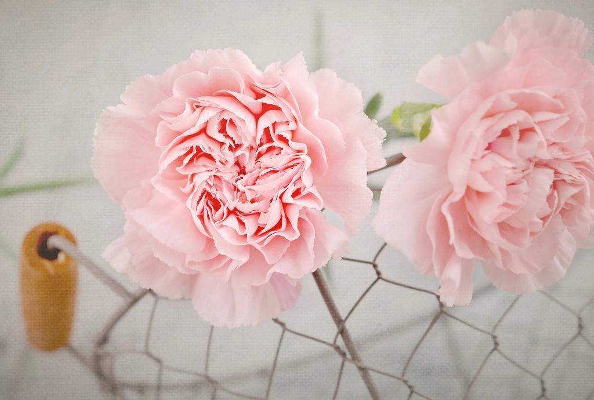

Países Bajos
Clavel de Holanda
Un clásico de la floristería por su resistencia en jarrón, su amplia gama de colores y sus pétalos rizados. Se presenta en clavel estándar, de una flor por tallo, y en clavel ramificado o miniclavel, con varios botones por vara.
Países Bajos es el gran centro europeo del comercio de flor cortada y cuenta con una larga tradición en la selección de variedades.